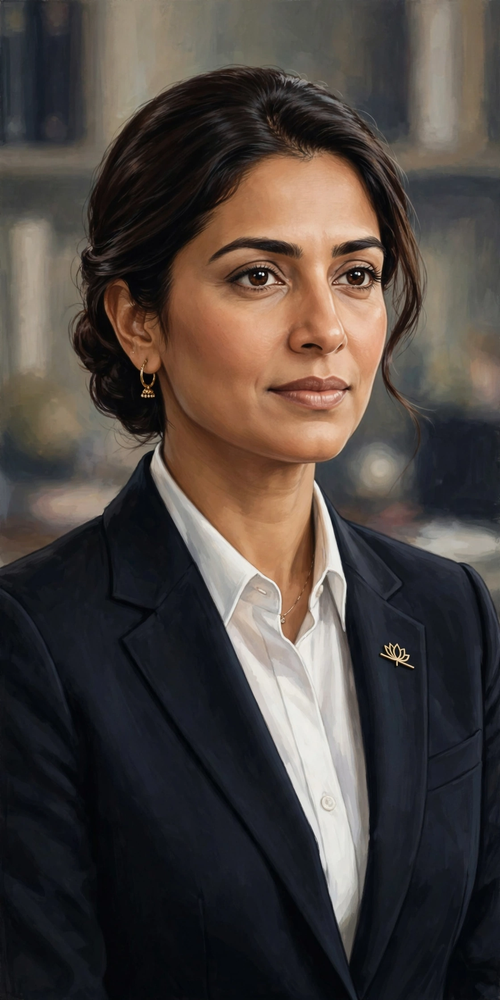

Indra Nooyi
From Wikipedia, the free encyclopedia
| Indra Nooyi | |
 | |
| Born | Indra Krishnamurthy, 28 October 1955, Madras (now Chennai), India |
|---|---|
| Education | University of Madras; IIM Calcutta; Yale School of Management |
| Occupation | Business executive |
| Known for | CEO (2006–2018) and chair of PepsiCo |
| Spouse | Raj K. Nooyi |
Indra Nooyi (née Krishnamurthy; born 28 October 1955) is an Indian-born American business executive who served as chief executive officer of PepsiCo from 2006 to 2018 and as its chair until 2019. Consistently ranked among the world's most powerful women during her tenure, she was the architect of PepsiCo's "Performance with Purpose" strategy, steering the maker of Pepsi and Frito-Lay snacks toward a broader portfolio of foods and drinks marketed as healthier.
Early life and education
Nooyi was born in Madras (now Chennai), Tamil Nadu, into a Tamil family. She studied physics, chemistry and mathematics at Madras Christian College and earned an MBA from the Indian Institute of Management Calcutta. After working at Johnson & Johnson and a textile firm in India, she moved to the United States in 1978 for a master's degree in management at the Yale School of Management, working as a dorm receptionist to help pay her way.
Career
She held strategy roles at the Boston Consulting Group, Motorola and ABB before joining PepsiCo in 1994. As chief financial officer and president she led the spin-off of the restaurant division (Yum! Brands), the acquisition of Tropicana in 1998 and the merger with Quaker Oats in 2001. Becoming CEO in October 2006, she increased revenue substantially, expanded international sales, and pushed the "Good for You" portfolio. She stepped down as CEO in October 2018, succeeded by Ramon Laguarta. In 2007 India awarded her the Padma Bhushan. Her memoir, My Life in Full, was published in 2021.